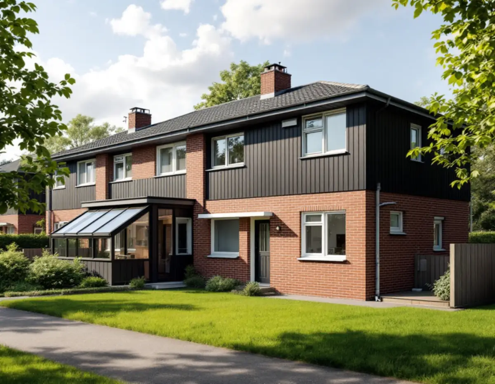
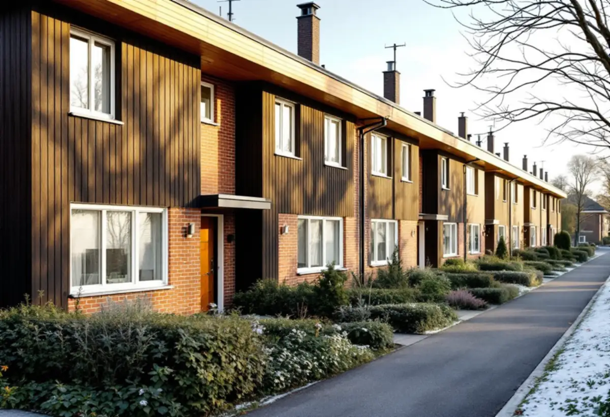
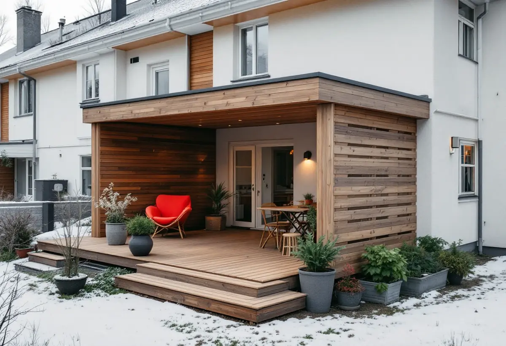

Platsbesök
Gratis besök där vi mäter tomten och ser vad grannarna har byggt.

Radhusen och kedjehusen i Bredäng, Sätra och Vårberg står på små tomter i enhetliga grupper.
Beskriv jobbet kort.
Något blev fel. Kontrollera uppgifterna eller ring 08 12 410 276.
Vi tittar på jobbet på plats innan du får offert.
Du ser vad som ingår och vad det kostar.
Vi drar av ROT direkt och sköter ansökan.
Geal Entreprenad AB, Bromma. Org.nr 559303-7566.

Stadens vägledning säger rakt ut att utrymmet för tillbyggnader ofta är litet – men ett skärmtak, ett uterum eller en bod kan få plats. Geal Entreprenad AB ritar och bygger det som passar huset och tomten.
Stadens vägledning Varsam utveckling av småhus- och villaområden räknar Bredäng, Sätra, Skärholmen och Vårberg till de storskaliga stadsdelarna. Bredäng var den första stadsdelen som planerades i stor skala och började byggas 1962, följt av Sätra. Småhusen där är främst radhus och kedjehus, men det finns även villor och atriumhus.
Enligt områdesfakta för 2025 fanns 1 991 småhus i Skärholmens stadsdelsområde, och 1 976 av dem ägdes med äganderätt. I Sätra fanns 536 ägda småhus och i Bredäng 320. Bredäng står i vägledningens tabell som kulturhistoriskt värdefull miljö.

Vägledningen skriver att de gruppbyggda småhusen står på små tomter och att möjligheterna till större förändringar därför är begränsade. Som regel finns inget utrymme för tillbyggnad, eftersom de enhetliga kvarteren och relationen till gatan är viktiga att behålla. I vissa fall kan ett mindre skärmtak, ett inglasat uterum eller en bod rymmas, och vägledningen konstaterar att just inglasade uterum är vanliga.
Det vanligaste är att lägga dem mot tomtens privata del, trädgårdssidan, och att undvika förändringar mot gatan. Vi börjar därför med att se vad grannarna i samma grupp redan har byggt och hur trädgården ligger.
Enligt vägledningen har småhusen i de storskaliga stadsdelarna huvudsakligen platta tak eller pulpettak, även om branta sadeltak förekommer. Fasaderna blandar tegel, trä och skivor, och färgsättningen är enhetlig inom varje husgrupp. Vägledningen ber fastighetsägaren utgå från husets volym, proportioner och takform och påpekar att det gäller även för ett skärmtak, ett inglasat uterum eller en bod.
Ett uterum mot ett radhus med platt tak får därför ofta ett platt eller svagt lutande tak, och dess takavvattning behöver lösas så att vattnet inte rinner mot grannens tomt. Vi ritar anslutningen mot husets fasad och tak så att den blir tät.
En lovfri tillbyggnad ska enligt Stockholms stad stå minst 4,5 meter från gräns mot granne, samfällighet eller allmän plats, annars krävs ett skriftligt medgivande. På ett radhus ligger huset ofta i gräns mot båda grannarna, så ett uterum på baksidan kräver i regel medgivanden – eller bygglov. Medgivandet ska innehålla fastighetsbeteckning, vilken åtgärd det gäller, en situationsplan med avstånden och grannarnas underskrifter.
Ligger huset i en särskilt värdefull miljö, som Bredäng, krävs bygglov ändå. Läs mer om takbyte i Skärholmen om taket ska bytas samtidigt, och om utbyggnader i allmänhet under tillbyggnad.
Gratis besök där vi mäter tomten och ser vad grannarna har byggt.
Stadsmuseets karta och detaljplanen kontrolleras.
Skriftliga medgivanden från grannarna, eller bygglov.
Uterum eller skärmtak efter husgruppens form.
Grund, stomme, tak och tät anslutning mot huset.
Slutbesked där lov eller anmälan har krävts.
Rotavdraget gäller arbetskostnaden, inte material. Skatteverket räknar en tillbyggnad av ett bostadshus som rotarbete om någon av dess sidor sitter ihop med husets yttervägg till minst 75 procent eller om en dörr förbinder de två delarna.
Bostaden ska vara äldre än fem år och större delen av den ursprungliga stommen ska behållas. Där avdraget gäller drar Geal det direkt på fakturan.
Storlek, glas och tak, grundläggning, anslutning mot husets fasad och takavvattning, och om bygglov behövs. Efter ett gratis platsbesök får du ett skriftligt kostnadsförslag.
Mer boyta i samma hus.
Tillbyggnad →Takbyte, takbesiktning och plåtarbeten.
Takläggare i Skärholmen →Radhus i grupper i Bredäng, Sätra och Vårberg.
Takrenovering i Skärholmen →Radhustomterna och grannarna.
Attefallshus i Skärholmen →Radhusen, källarplanet och golvbrunnen.
Badrumsrenovering i Skärholmen →Hela ombyggnaden av radhuset.
Byggföretag i Skärholmen →Radhusen från 60- och 70-tal.
Fasadmålning i Skärholmen →Fasader på radhus och kedjehus.
Fasadrenovering i Skärholmen →Radhus i sammanhållna husgrupper.
Fönsterbyte i Skärholmen →Miljonprogrammets radhus.
Fönsterrenovering i Skärholmen →Nya golv i radhus och lägenheter.
Golvläggare i Skärholmen →Parkett och lamellgolv från 1960-talet.
Golvslipning i Skärholmen →1960-talskök, bostadsrätt och radhus.
Köksrenovering i Skärholmen →Lägenheter, trapphus och radhus.
Målare i Skärholmen →Rännor och stuprör i sluttningarna.
Plåtslagare i Skärholmen →Altan, plank och förråd vid radhuset.
Snickare i Skärholmen →Egna radhus i Sätra, Bredäng och Vårberg.
Takbyte i Skärholmen →Ny tapet i hyresrätt och bostadsrätt.
Tapetsering i Skärholmen →Renovera hela huset eller lägenheten.
Totalrenovering i Skärholmen →Eller ring 08 12 410 276, mån–fre 08–17.
Beskriv jobbet kort.
Något blev fel. Kontrollera uppgifterna eller ring 08 12 410 276.